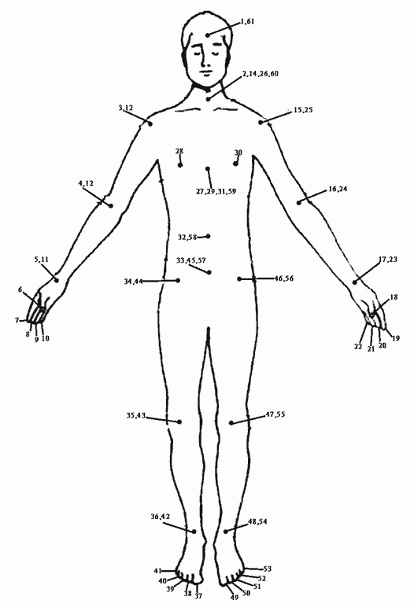

GESAR - "New Frontiers"
MASTERY 0
61-POINT RELAXATION
1. Study the diagram
Figure 2. 1 illustrates 61 points on the body. To do this exercise, you need to memorize the sequence of points. (This is not difficult, because the points are arranged in a simple pattern. ) They begin at the forehead, travel down and up your right arm, then across to your left arm, down your torso, down and up your right and left legs, then back up your torso to the forehead.
2. Focus your attention on one point at a time
Begin at your forehead. Focus your attention between your eyebrows and think of the number one. Keep your attention fixed at Point 1 for several seconds until you feel that your awareness of the location is clear and dis-tinct. Think of your self being located at this point. Be-fore moving on to the next point, you should feel a sense of warmth and heaviness at this spot.
3. Move through each point in sequence
In the same manner, successively focus your attention on each of the first thirty-one points. Proceed slowly, and imagine your self being located at each point as you reach it. Feel the sense of warmth and heaviness before moving on. Do not allow your mind to wander. At first you may find this difficult to do; you will discover that at times you suddenly will forget that you are doing the exercise and start daydreaming or thinking about something else. If you lose your place, return to the beginning or the last numbered point you attended to, and continue. Practice with thirty-one points until you can attend to them all in sequence without daydreaming or losing track.
4. Extend your practice to include all sixty-one points
When you can attend to thirty-one points in sequence, repeat Steps 1 and 2 with all sixty-one points. Practice this until you can do all points without losing your focus. Now you are ready to use this exercise with lucid dream induction techniques.
(Adapted from Exercise Without Movement by Swami Rama [Himalyan Institute, Honesdale, PA]. )